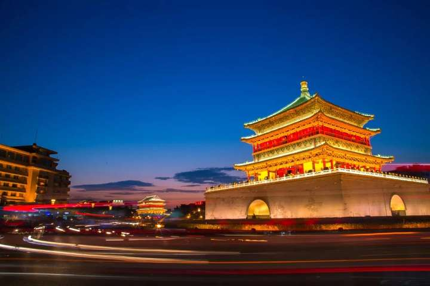
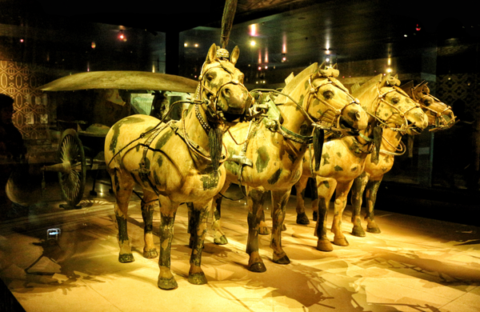
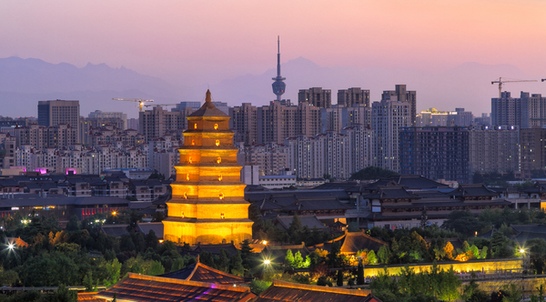
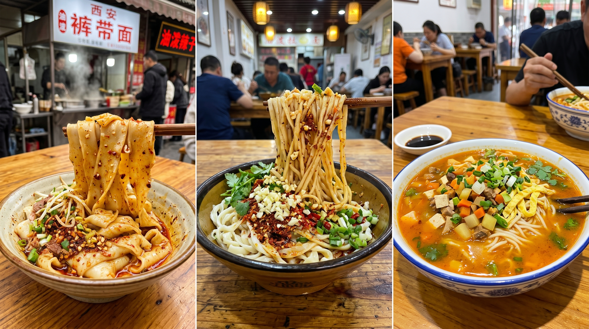

For International Travelers
After 6 Visits • Authentic Experience • Scam Avoidance • Food Guide
By Muniao Homestay | China Tourism
Winter in Xi’an blends ancient history and modern city lights, with snow-dusted city walls and busy urban scenes. The street food aroma in Muslim Quarter warms the cold wind. You must visit Xi’an this winter! After 6 visits, I made this ultra-detailed travel guide just for you!

Xiaonanmen Morning Market
Start your day with authentic local
breakfast and street snacks.
Small Wild Goose Pagoda
Ticket: ¥40 per person; tower climb
costs ¥25 extra. You can get a full view of Small Wild Goose Pagoda from the 4th floor of Joy
City nearby.
Shaanxi History Museum
Remember to reserve 3 days in advance;
closed on Mondays. Selfie sticks are NOT allowed inside. During holidays, you need to reserve 7
days early. If you cannot get free tickets, you can pay ¥30 to visit the Treasure Hall and
Exhibition Hall.
Sajinqiao Food Street
Many popular local foods; very lively
at night. Many locals come here for authentic food.
Xi’an City Wall
It is recommended to visit around sunset –
the scenery from dusk to night is stunning. There is a performance at Yongning Gate around
18:00. You can rent a bicycle to ride on the wall; you don’t have to walk the entire distance.
Bell Tower & Drum Tower
Combo ticket: ¥50 per person. We do
NOT recommend buying tickets to go upstairs. The night views alone are incredibly beautiful.

Stele Forest Museum
There are many famous calligraphy works
and stone tablets. It is recommended to hire a professional guide – explanations make the visit
much more interesting.
Yongxingfang
Less crowded than Muslim Quarter and Sajinqiao,
but has plenty of great food. Bowl Smashing activity and Brush Pastry are located here!
Daming Palace Relic Park
It’s better to learn about its
history background before visiting to fully appreciate the site.
Song of Everlasting Sorrow Show
Ticket: from ¥278 per person.
Expensive but worthwhile! Book tickets 5 days in advance; choose the first show. The performance
is stunning and tells the love story of Yang Yuhuan and Emperor Xuanzong.
Big Wild Goose Pagoda
Symbol of Tang Dynasty culture and
Xi’an landmark.
Grand Tang Mall
Extremely lively at night; perfect for photos
in Hanfu. Do NOT drive here – there is no parking space.

Terracotta Warriors Museum
One of the Eight Wonders of the
World; the must-visit landmark in Xi’an.
Huaqing Palace
Ticket: ¥120. This was the bathing place of
Yang Yuhuan. The mountain view is beautiful, especially during sunset.
Li Mountain
Enjoy the natural scenery and historical
atmosphere above Huaqing Palace.
Song of Everlasting Sorrow Show
Stunning performance telling
the romantic love story of Emperor Xuanzong and Yang Yuhuan. Book early!
Temperature & Clothes: Dec: -3°C to 7°C; Jan: -4°C to 5°C. Wear down jacket, warm pants, snow boots. Light inner layer: thick sweater or thin sweatshirt. Waterproof gloves if snowy.
Packing List: Power bank, charger, toiletries, cosmetics, skin care (dry wind!), ID, student ID.
Metro Lines:
Line 1: Guangren Temple, Dapiyuan, Sajinqiao, Banpo Museum
Line 2: Bell Tower, Drum Tower, Muslim Quarter, Gaojia Courtyard, Stele Forest, City Wall, Small
Wild Goose Pagoda, Shaanxi History Museum, Daxingshan Temple
Line 3: Big Wild Goose Pagoda, Qujiang Joy City, Qinglong Temple, Expo Park
Line 4: Daming Palace, Tang Paradise, Grand Tang Mall

Zenggao (Steamed Rice Cake): Sweet jujube aroma, soft and sticky.
Su Bing (Flaky Pastry): Not too sweet, 11 flavors, crispy and fragrant.
Beef & Lamb Roujiamo: Freshly baked bread, tasty meat, satisfying carb feast.
Beef & Lamb Paomo: Hot soup with broken bread, paired with garlic; perfect for winter.
Huanggui Persimmon Cake: Golden color, sweet and fragrant; seasonal winter snack.
Jinxian Youta: Thin layers like silk, melts in mouth.
Recommended Homestay: 【Tingcheng · Nanfeng】
Smart lock, 24h check-in, big screen projector, smart home. Near subway station, close to Stele Forest Museum and Muslim Quarter. Spacious room for up to 4 people, great for families and friends.
4-min walk to Yongning Gate Station, SKP, Zhongmao Plaza; 5-min to Tiyuguan East Road Food Street; 10-min to Liuyuan Bar Street. Direct subway to Sajinqiao, Big Wild Goose Pagoda, Tang Paradise, Xi’an North Station.